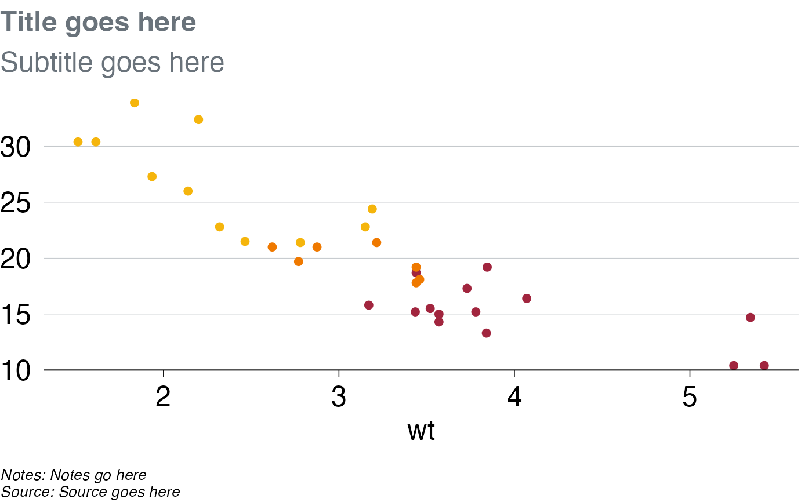
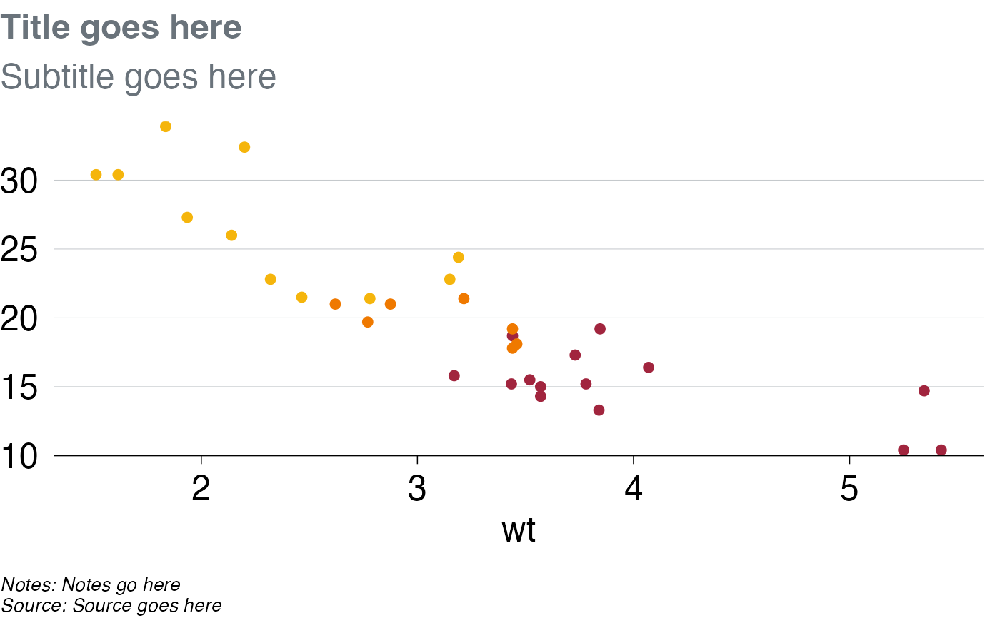

Save plots in Grattan-approved sizes and shapes
grattan_save.RdSave ggplot2 object as an image in the correct size and resolution for Grattan charts. Wrapper around ggsave(). `grattan_save_all()` is a wrapper around `grattan_save()` with `type = "all"`, `save_pptx = TRUE`, `save_data = TRUE`.
Arguments
- filename
Required. The filename (including path where necessary) where you want to save your image. The filename should usually end in ".pdf" or ".png" (see
?ggsavefor the full list of allowed extensions/types). Note that iftype = "all", a subdirectory will be created based on your filename; the files will go in that subdirectory. This is the case for `grattan_save_all()`.- object
The ggplot2 graph object to be saved. Defaults to
last_plot(), which will save the last plot that was displayed in your session.- type
Sets height and width to Grattan defaults. The following chart types are available:
"normal" The default. Use for normal Grattan report charts, or to paste into a 4:3 Powerpoint slide. Width: 22.2cm, height: 14.5cm.
"normal_169" Useful for pasting into a 16:9 format Grattan Powerpoint slide. Width: 30cm, height: 14.5cm.
"tiny" Fills the width of a column in a Grattan report, but is shorter than usual. Width: 22.2cm, height: 11.1cm.
"wholecolumn" Takes up a whole column in a Grattan report. Width: 22.2cm, height: 22.2cm.
"fullpage" Fills a whole page of a Grattan report. Width: 44.3cm, height: 22.2cm.
"fullslide A 16:9 Grattan Powerpoint slide, complete with logo. Use this to drop into standard presentations. Width: 33.9cm, height: 19.0cm
"blog""Creates a 4:3 image that looks like a Grattan Powerpoint slide, but with less border whitespace than `fullslide`."
Set type = "all" to save your chart in all available sizes or use `grattan_save_all()`.
- height
Numeric, optional. NULL by default. Controls the height (in cm) of the image you wish to save. If specified, `height` will override the default height for your chosen chart type.
- save_pptx
`FALSE` by default. If `TRUE`, a Powerpoint presentation containing your graph will be created. Note that Powerpoint templates are not available for all chart types. If `type = "all"`, Powerpoint presentations will be created for each type for which a Powerpoint template exists.
- save_data
Logical. Default is FALSE. If set to TRUE, a properly-formatted .xlsx file will be created containing the dataframe you passed to ggplot(). The filename and path will be the same as your image, but with a .xlsx extension.
- force_labs
Logical. By default, `grattan_save()` will remove your title, subtitle, and caption (if present) from your graph before saving it, unless `type` = "fullslide". By setting `force_labs` to TRUE, your title/subtitle/caption will be retained regardless of `type`.
- watermark
Character. NULL by default. If a string, like `DRAFT`, is supplied, this string will be added to your plot as a watermark. See `?watermark` for options - to use these, call `watermark()` directly before saving your plot.
- latex
Logical. FALSE by default. If TRUE, exports figure environment LaTeX code to clipboard and console.
- dpi
Plot resolution. Default is "retina".
- ignore_long_title
Default is FALSE. If TRUE, the check on a long title won't be performed. This is useful if using ggtext syntax within titles.
- ...
arguments passed to `ggsave()`. For example, use `device = cairo_pdf` to use the Cairo PDF rendering engine. For `grattan_save_all()`, the `...` are passed to `grattan_save()`.
Examples
library(ggplot2)
p <- ggplot(mtcars, aes(x = wt, y = mpg)) +
geom_point() +
theme_grattan()
if (FALSE) grattan_save("p.png", p)
# If you don't assign your chart to an object name, that's OK, it will still
# save if it was the last plot displayed.
ggplot(mtcars, aes(x = wt, y = mpg)) +
geom_point() +
theme_grattan()
 if (FALSE) grattan_save("p.png")
# Want to make a 'self-contained' chart that includes a
# title/subtitle/caption, eg. to go on the Grattan Blog?
# If so, just add them - they'll be properly
# left-aligned when you save them with grattan_save(), like this:
ggplot(mtcars, aes(x = wt, y = mpg, col = factor(cyl))) +
geom_point() +
scale_y_continuous_grattan(limits = c(10, NA)) +
scale_colour_manual(values = grattan_pal(n = 3)) +
theme_grattan() +
labs(title = "Title goes here",
subtitle = "Subtitle goes here",
caption = "Notes: Notes go here\nSource: Source goes here")

# The plot above won't look right in RStudio's viewer - the text is
# aligned to the left of the plot area, not the image. Once you save it,
# the file should have properly-aligned text:
if (FALSE) grattan_save("your_file.png")
# Want to make a full Powerpoint slide? Just use type = "fullslide"
# in grattan_save(), like this.
# If you include 'notes' and 'source' as below, grattan_save() will
# automatically
# split them onto separate rows. It will also wrap your title and subtitle
# automatically over up to 2 rows; and wrap your caption over as many rows
# as necessary.
ggplot(mtcars, aes(x = wt, y = mpg, col = factor(cyl))) +
geom_point() +
scale_y_continuous_grattan(limits = c(10, NA)) +
scale_colour_manual(values = grattan_pal(n = 3)) +
theme_grattan() +
labs(title = "Title goes here",
subtitle = "Subtitle goes here",
caption = "Notes: Notes go here. Source: Source goes here")
if (FALSE) grattan_save("your_file.pdf", type = "normal")
if (FALSE) grattan_save("p.png")
# Want to make a 'self-contained' chart that includes a
# title/subtitle/caption, eg. to go on the Grattan Blog?
# If so, just add them - they'll be properly
# left-aligned when you save them with grattan_save(), like this:
ggplot(mtcars, aes(x = wt, y = mpg, col = factor(cyl))) +
geom_point() +
scale_y_continuous_grattan(limits = c(10, NA)) +
scale_colour_manual(values = grattan_pal(n = 3)) +
theme_grattan() +
labs(title = "Title goes here",
subtitle = "Subtitle goes here",
caption = "Notes: Notes go here\nSource: Source goes here")

# The plot above won't look right in RStudio's viewer - the text is
# aligned to the left of the plot area, not the image. Once you save it,
# the file should have properly-aligned text:
if (FALSE) grattan_save("your_file.png")
# Want to make a full Powerpoint slide? Just use type = "fullslide"
# in grattan_save(), like this.
# If you include 'notes' and 'source' as below, grattan_save() will
# automatically
# split them onto separate rows. It will also wrap your title and subtitle
# automatically over up to 2 rows; and wrap your caption over as many rows
# as necessary.
ggplot(mtcars, aes(x = wt, y = mpg, col = factor(cyl))) +
geom_point() +
scale_y_continuous_grattan(limits = c(10, NA)) +
scale_colour_manual(values = grattan_pal(n = 3)) +
theme_grattan() +
labs(title = "Title goes here",
subtitle = "Subtitle goes here",
caption = "Notes: Notes go here. Source: Source goes here")
if (FALSE) grattan_save("your_file.pdf", type = "normal")